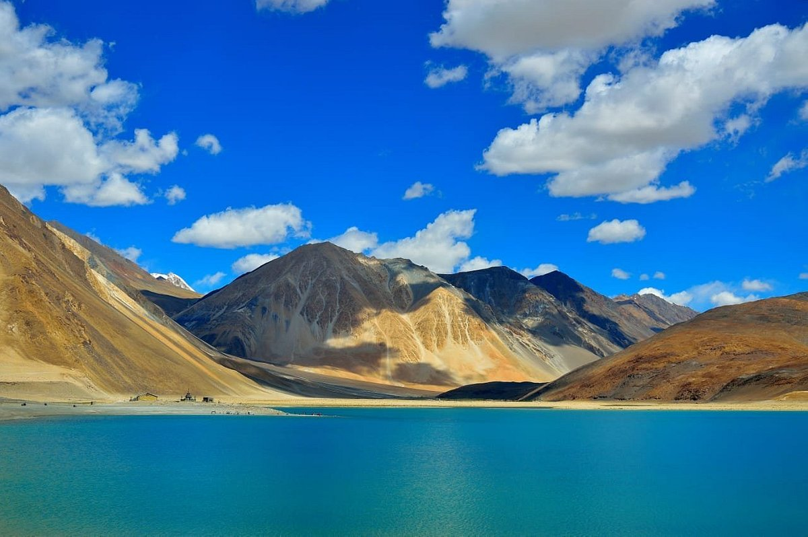

;
Nimmu
Pangong Tso
Thiksey Monastery

Pangong Tso or Pangong Lake is an endorheic lake spanning eastern Ladakh and West Tibet situated at an elevation of 4,225 m (13,862 ft). It is 134 km (83 mi) long and divided into five sublakes, called Pangong Tso, Tso Nyak, Rum Tso (twin lakes) and Nyak Tso. Approximately 50% of the length of the overall lake lies within Tibet China, 40% in Ladakh India and the rest is disputed and is a de-facto buffer zone between India and China.
Thikse Gompa or Thikse Monastery is a gompa (Tibetan-style monastery) affiliated with the Gelug sect of Tibetan Buddhism. It is located on top of a hill in Thiksey approximately 19 kilometres (12 mi) east of Leh in Ladakh, India.[1] It is noted for its resemblance to the Potala Palace in Lhasa, Tibet, and is the largest gompa in central Ladakh, notably containing a separate set of buildings for females
Nimmu is a beautiful valley that marks the confluence of the Indus River and Zanskar River. The Indus River drains the dry and deserted terrains of Ladakh's landlocked valley and serves as its lifeline. Zanskar, on the other hand, is a tributary of this river and merges into it from the north-eastern direction. On its way to the meeting point, the river passes through the spectacular Zanskar Gorge, which is a dream destination for trekkers.